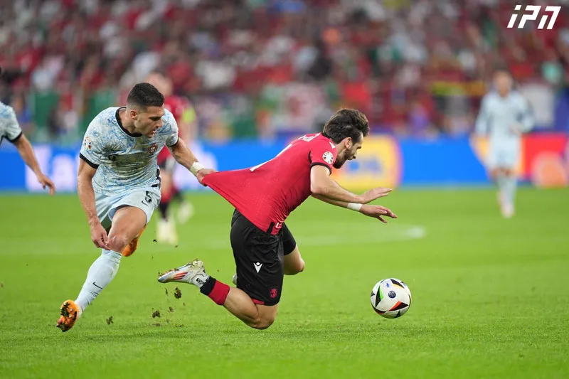
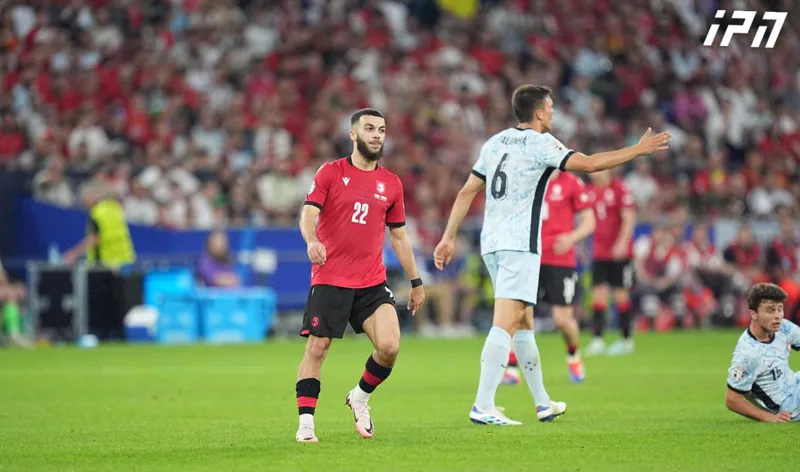
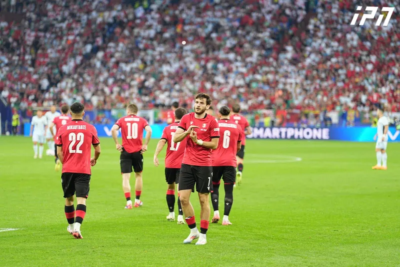

საქართველო პორტუგალია



ისტორიული გამარჯვება ევროპის ჩემპიონატზე - ჯგუფური ეტაპის მესამე მატჩში საქართველომ პორტუგალიის ნაკრები 2:0 დაამარცხა. ამ შედეგით საქართველოს ნაკრებმა 4 ქულა მოიპოვა და მერვედფინალში გავიდა. მატჩის პირველი გოლი შეხვედრის დაწყებიდან მეორე წუთზე ხვიჩა კვარაცხელიამ გაიტანა, ხოლო მეორე გოლი, მეორე ტაიმში, პენალტით გიორგი მიქაუტაძემ გაიტანა. როგორც ცნობილია, ევროპის ჩემპიონატზე პირველი მატჩი საქართველოს ნაკრებმა 18 ივნისს, თურქეთთან გამართა და 1:3 დამარცხდა, ხოლო 22 ივნისს გამართულ მეორე მატჩში ჩეხეთის ნაკრებთან შეხვედრა ფრედ, 1:1 დაასრულა, შესაბამისად, ევროპის ჩემპიონატზე პირველი ქულა მოიპოვა.